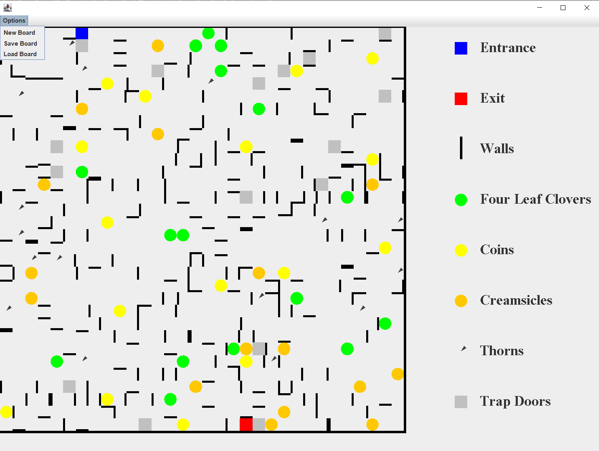

Project Screenshot
Project Description
This is a Java Swing application that generates a 32x32 maze-like board with entrances, exits, obstacles, and rewards. The board layout is randomized each time, and different objects are color-coded for easy recognition. Users can generate new boards and save/load previous boards using the built-in menu options.
Skills Learned
- Object-Oriented Programming with abstract classes and inheritance
- GUI design and graphics rendering with Java Swing and Graphics2D
- Randomized procedural generation and collision-free object placement
- File handling and serialization to save/load board state